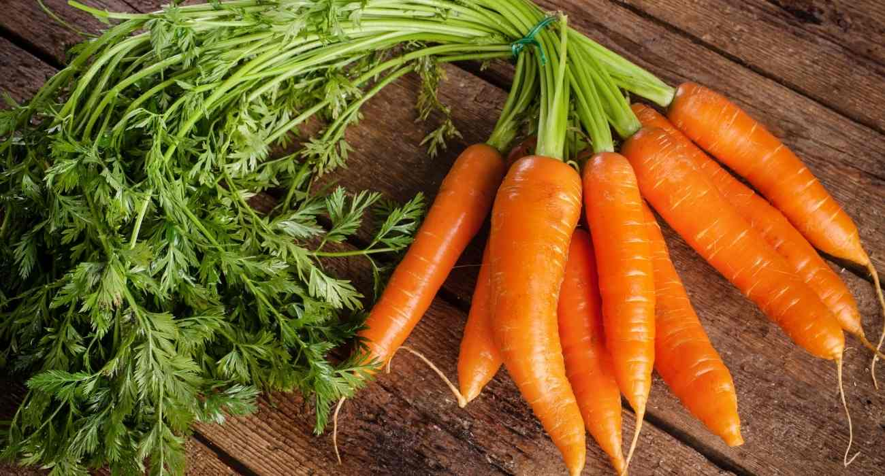

Frutas e verduras
Tomate - 1,90 Reais o quilo

O tomate é um ingrediente indispensável na culinária, valorizado por sua cor vibrante, sabor suculento e versatilidade inigualável. Ele é um fruto que pode ser usado tanto em pratos salgados quanto doces, adicionando um toque de frescor e acidez que eleva qualquer receita.
Cenoura - 2,60 Reais o quilo
A cenoura é um vegetal notável pela sua cor alaranjada brilhante e seu sabor naturalmente adocicado. Conhecida pela sua textura crocante, ela é um ingrediente extremamente versátil e nutritivo que se adapta a uma variedade de pratos.
Produtos não pereciveis
Lentilha - 4,90 Reais

A lentilha é uma leguminosa incrivelmente nutritiva, apreciada por sua textura macia e seu sabor terroso e suave. Conhecida como um superalimento, ela é rica em proteínas, fibras e minerais essenciais.
Ovos de codorna - 15,90 Reais

Os ovos em conserva são uma iguaria versátil e cheia de sabor, ideal para quem busca uma opção de lanche ou acompanhamento prático e nutritivo. Mergulhados em uma salmoura ou vinagre temperado, eles adquirem um sabor único, que pode variar do levemente ácido ao picante, dependendo da receita.
Higiene pessoal
Pasta de dentes 150g - 9,90 Reais
A pasta de dente é um produto essencial para a sua rotina de higiene bucal, projetado para limpar e proteger dentes e gengivas. Sua fórmula é desenvolvida para remover a placa bacteriana e resíduos de alimentos, deixando uma sensação de frescor e limpeza duradoura.
Desodorante aerosol - 21,50

O desodorante aerossol é a escolha ideal para quem busca proteção antitranspirante eficaz e uma sensação de frescor instantânea. Sua aplicação em spray garante uma cobertura uniforme e uma secagem rápida, sem deixar a pele com a sensação de umidade.